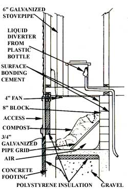

You can chase the winter outhouse blues away, just as I've done, with a composting toilet. You'll have to invest only about $150, and a few days' effort, to come up with a unit that rivals the best of the Swedish designs ... and yours will be customized to fit that inevitable tight spot in your home. My own waterless throne is stuck in a cold crawl space where no regular composter would even fit ... let alone work properly, since the location is far from my home's sources of heat. Yet my "in-house outhouse" functions so well that I've been asked to build 15 others, and have easily gotten a patent on the design.
There are three basic tricks to my waterless closet, and they can be applied in any situation. First, don't bother building a complicated trapezoid-shaped holding tank such as you might find in a commercial composter . . . instead, just make a simple rectangular box. Next, suspend the compost bed on a sloping grid, so air can reach the pile from below. (Forget the idea of channels or louvers to get air inside the pile. They'll clog up before long.) And third, include a drain or bypass for excess liquid. (Even the warmest composting toilets equipped with a forced draft will have to be bailed out if too many people use them too often.)
A glance at the accompanying diagram will show how these tricks are applied. The bed of compost is suspended on a grid made from old 3/4" galvanized water pipe (rebar would do just as well). I don't think the slope is crucial, but 45° seems to work fine. To get things started, you'll need to spread hay or grass clippings over the grid to form a bed. Then add peat moss, leaf mold, topsoil, or compost to introduce the soil organisms that'll do the decomposition work. (Contrary to popular belief, no special proportions of these are necessary.) Once the compost bed is established, the hay will break down . . . but the knitting action of the continuing biological process will keep the bed suspended. That way, air can pass up through all the compost, facilitating the aerobic reaction and helping to evaporate moisture.
The rectangular box can be built from fiberglass-covered plywood or with dry-stacked concrete blocks covered with surface-bonding cement. (See MOTHER NO. 70, page 107 for more on building such walls.) The drawing shows a design for a block-walled unit. (The size can be varied ... my own chamber is 4 feet square and 3 feet high.)
Most surface-bonding cements (I prefer Surewall by Bonsal Corporation) are waterproof, a quality that eliminates the need for any later sealing work. Consequently, the whole job can be done in one quick operation (it takes two people about four hours to lay, shim, and stucco a block box). Of course, if you get real (fussy) about shimming and setting the blocks to plumb, it could take longer... but remember, you're building a toilet, not a cathedral.
A plywood version has proved appropriate for a composting toilet I designed for a boat shop on a wharf, since the 4' X 8' assembly is hung from the floor joists of a drying shed. When the pilings shift with ice and tides, the box moves with them and isn't harmed. The boatbuilders traded a cozier indoor incinerating toilet for my chilly outdoor model, because the propane- fired device cost a lot to run, threatened to burn down the shop, and produced poisonous hydrogen sulfide gas.
Their outdoor john is very cold, however, and is used by too many people, so the waste doesn't decompose well. The liquid bypass-which runs out to a box of sawdust set above the high-water mark-does allow the material to break down enough to make it safe to unload, though. You could adapt this idea (with the liquid going to a separate composting pile outside the box) for limited use in cabins with post foundations.
The key to the successful operation of acomposting toilet in a chilly environment isthe liquid bypass, though the importance ofthis option is hard for some people to understand. (This is no doubt because of thevarious myths about waterless toilets creat ed by those whove used one for a day or a week and then gotten a government grant to do a study!) You see, there just isn't any magic recipe (or chemical formula) that will spirit away the age-old hobgoblin of sewage: If the liquid isn't drained away, it must be evaporated... a tough job, since each user will supply about a quart per day! In the wild, Mother Nature takes care of this dispersion with the sun, wind, and rain, and makes humus at the same time. When using a composting toilet, though, you're attempting to bring that process in doors and make it work in a dark box... and it's necessary to limit the amount ofliquid that must be dealt with. I hope this information will help you avoid frostbite, a new, septic system or both. But don't expect miracles... it'll take care and concern to work this little compromise with nature. Take advantage of the resources that are available. I suggest starting with the National Center for Ap propriate Technology's booklet -OwnerBuilt Compost Toilet Designs", available free from NCA T, Dept. TMEN, P.O. Box 3838, Butte, Montana 59701... and then moving on to Witold Rybezynski's Low-Cost Technology Options for Sani tation (Unipub, $10)... and-if you get truly desperate-I'll prepare you a spruced up set of plans for $20, or we can arrange for consulting. Write me at Dept. TMEN, Box 462A, Kennebunkport, Maine 04046.
|
 |
|
|